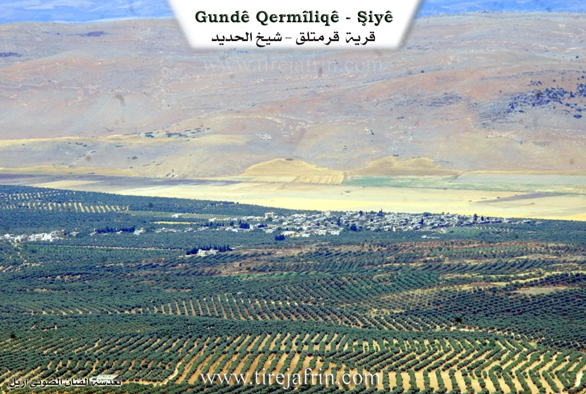
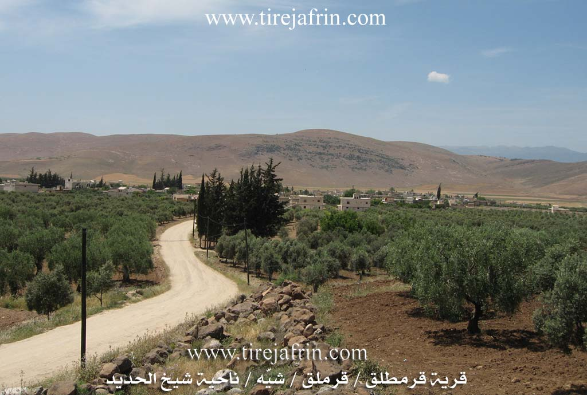
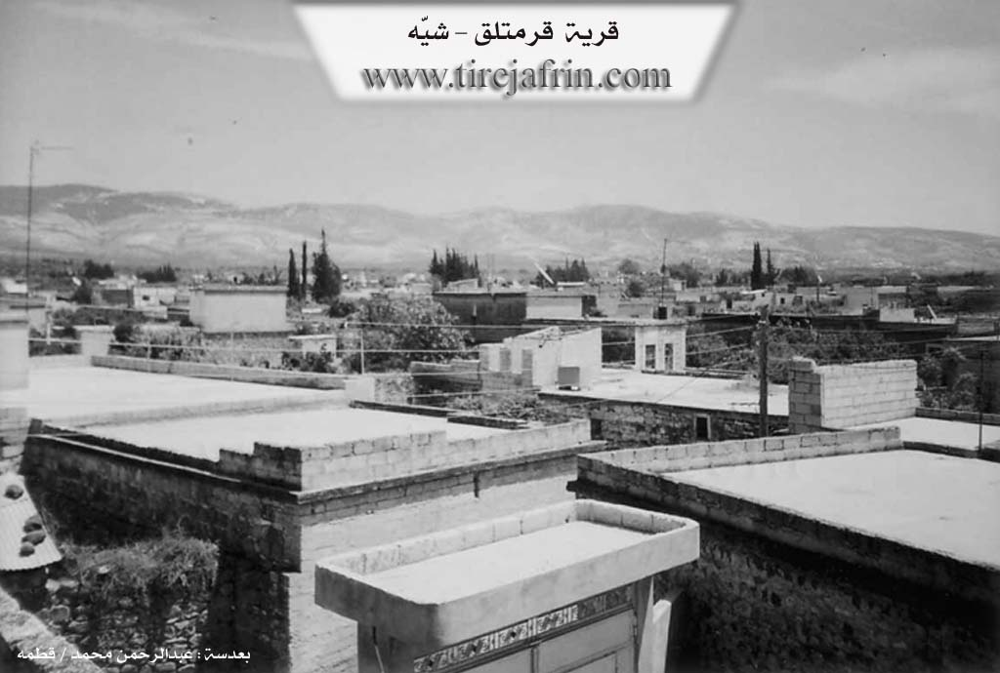

General Information
Nahiya (Subdistrict)
Şiyê
Also Known As
Kermêtliq, Qara Matlaq, Qermilqê, Qermitlîq, Qermtalqê, Qermîliq, Qermîltiq, Qermîltiqê, Qermîtiq, Qermîtlaq, Qermîtlaqê, Qermîtliq, Qermîtlêq, al-Khazfiya, الخزفية (al-Khazfiyah), قرمتلق, قره متلق
Families, Clans, etc.
Mala Beklerê, Mala Bilko, Mala Dewrîş, Mala Ebdilla, Mala Huseynî Têwê, Mala Îbrahîm Yûsiv, Mala Şêx Silêmên, Mala Şêxê

Photos



Basic Information about Qermîtliq
Source: Ax û Welat
Etymology: Derived from qermît meaning tiles as the area was historically a site for tile manufacturing
Foundation Date/Period: Approximately 500 years ago
Springs: Kilsê
Hills: Gedûka Helebê
Shrines: Mala Şêx Silêmên, Dara Miraza
Ruins: Xan
Trees: Dara Miraza
Other Landmarks: Toros, Amanos
Summaries
I. Summary from TirejAfrin Site of Qermîtliq (English)
According to the book "Mountain of the Kurds" (جبل الكرد) (Afrin City) Geographic Study by Dr. Mohammed Abdo Ali (الدكتور محمد عبدو علي):
Qermîtliq, Qara Matlaq, al-Khazfiya (الخزفية) /2718n, 3km - 230m/:
- "Qarmit" (قرميت) means pottery in Kurdish. The Arabic name is a translation of its Kurdish name.
- A large village located west of Sheikh al-Hadid town adjacent to the Turkish borders, surrounded by barbed wire from the west. The first troupe for Kurdish folk arts was established there in the sixties of the twentieth century. Beside it was a camp for Ibrahim Pasha (إبراهيم باشا]) son of [[Mohammed Ali Pasha (محمد علي باشا) during his campaigns on Syria in the nineteenth century.
According to the book: "Afrin.... Its River and Green Hills" (عفرين .... نهرها وروابيها الخضراء) by writer Abdulrahman Mohammed (عبدالرحمن محمد) from Qatma village (قرية قطمه):
Qarmatlaq (قرمتلق): A village in Mountain of the Kurds (جبل الكرد), belonging to Sheikh al-Hadid sub-district (ناحية شيخ الحديد), Afrin City region (منطقة عفرين), Aleppo governorate (محافظة حلب).
It is a large village located at the end of the western slope of the middle part of the mentioned mountain, in a fertile plain with volcanic soil and its lands gently slope west until they adjoin the edges of Alexandretta district (لواء اسكندرونة), 7km north-west of Sheikh al-Hadid. It is bordered to the north by fertile plain planted with olive trees and Sheikh Jiqallalli village (قرية شيخ جقاللي), to the south by Alexandretta district plain and Turkish borders, to the east by fertile plain planted with olive trees and Sheikh al-Hadid town, and to the west directly by the border strip and al-Amq plain (سهل العمق).
The number of its houses reaches about 150 houses and its age is 400 years. Its old dwellings are stone-clay with flat wooden roofs and the modern ones are concrete except the southern ones adjacent to Turkish lands. The region's settlement is very ancient as evidenced by the presence of remaining decorated pottery and tanks built of basalt and limestone stones. Its roofs are arch-shaped and the columns are basalt with crowns.
Electricity network, telephone, elementary and preparatory school and mosque in its center are available. The inhabitants work in olive, grain and legume cultivation rainfed and irrigated from artesian wells including vegetables, pomegranates, apricots, almonds, lemons in addition to raising livestock. The residents drink water from tanks and reservoirs filled with rainwater. It is an old village since the Ottoman era, and the border strip passes 500m west. It connects with the sub-district by paved road.
Among the families in Qarmatlaq village (قرية قرمتلق) are Haj Ibrahim (حاج ابراهيم) (Qartal, one of the founders of Qarmatlaq folk heritage troupe) – Baklru (بكلرو) – Darwish (درويش) (Mahmoud Darwish (محمود درويش), one of the founders of Qarmatlaq folk heritage troupe) – Dawud (داوود) (Kurdish Hanif), in addition to many holders of university degrees and institute certificates.
Village Mayor: Zakariya Haji Ibrahim (زكريا حاجي ابراهيم)
Prepared and executed by: Site manager of Tireij Afrin: Abdulrahman Haji Othman (عبدالرحمن حاجي عثمان)
20/12/2013
II. Summary from Ax û Walat Transcript of Qermîtliq
Source: https://www.youtube.com/watch?v=uBeELpdDr44
The village of Qermilq, also referred to as Qermîliq or Qermîx, is situated in the Şiyê district of Çiyayê Kurmênc, approximately 44 kilometers northwest of Efrîn. Nestled near the Amanos and Toros mountains, the village shares a border with the region north of the line drawn in 1938. The name Qermilq is derived from qermît, meaning tiles, as the location was historically a center for manufacturing tiles and bricks from the local soil. Before the current village was established around 500 years ago, the site served as a Xan (caravanserai) on the trade route known as Tarîq el Herîr (Silk Road) or the camel route, where caravans traveling between Heleb and Stenbol would rest. A nearby pass is known as Gedûka Helebê or Bawabet Heleb.
The village population consists of roughly 300 households. The original settlers were shepherds described as Mala Şêxê. The community is historically anchored by four foundational families: Mala Ebdilla, Mala Îbrahîm Yûsiv, Mala Beklerê, and Mala Dewrîş (also known as Mala Sîsya). Over time, other families such as Mala Bilko and Mala Huseynî Têwê established themselves there. The villagers follow the Rifaî order, gathering for dhikr on Friday evenings at Mala Şêx Silêmên. A significant religious figure, Îbramê Şêxo, began constructing the village mosque in 1344 Hijri (approximately 1925) but passed away before its completion; his tomb bears the Turkish inscription "Gelen û gêten" (Those who come and those who go).
A defining feature of Qermilq is its water source, Kilsê, located three kilometers east near Şiyê. A local legend dictates that the spring flows for seven years and runs dry for seven years, a cycle mythologically controlled by a girl or a young man sitting upon the source. The village is also famous for a 500 year old wishing tree called Dara Miraza. Visitors from surrounding villages like Erendê and Çaqela come to the tree, particularly on Wednesdays, to tie fabrics and sacrifice black chickens in hopes of curing illnesses or granting wishes.
The modern history of Qermilq is marked by the hardening of the border. While a border existed since 1938, villagers could access their lands until 1967. After the total closure, the village lost approximately 1200 hectares of farmland to the Turkish side. Despite these hardships, the village maintained a vibrant culture, establishing a noted folklore dance group in 1958 led by Menan Axê, which was known as Firqet el Funûn el Şeibiye li Cebel el Ekrad. The village is also known for a specialized ceremonial dish called Kutik, made with wheat, chickpeas, and chicken, traditionally prepared for weddings and funerals. Additionally, traditional healing practices persist, with elders like Apê Mihemed performing procedures to cure tongue tied children.
Transcripts
Foundation/Origin Information of Qermîtliq
Among the families are Haj Ibrahim (Qartal) and Mahmoud Darwish, who were founders of the Qarmatlaq folk heritage troupe.
Source: TirejAfrin Site
Originally established as a khan for caravans on the Silk Road. The village was founded by four or five families who migrated from Zorava for sheep grazing, settling near the ruins of the old khan.
Source: Ax û Walat Transcript
Possible Village Name Meaning of Qermîtliq
'Qarmit' means pottery in Kurdish. The Arabic name is a translation.
Source: TirejAfrin Site
Its name is derived from the Kurdish word for bricks/tiles ('qermîd'), as it was a production center for these materials.
Source: Ax û Walat Transcript